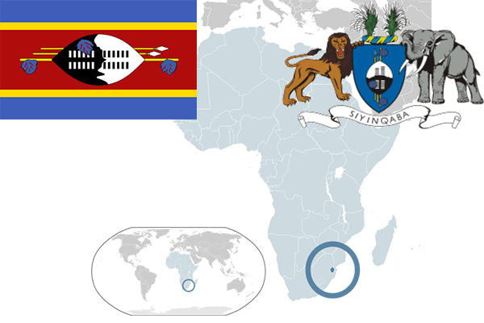

To`liq nomi: Svazilend Qirolligi
Region: Janubiy Afrika
Qonunchilik shakli: Konstututsiyali monarxiya
Mustaqillik kuni: 6-sentabr, 1968-yil
Poytaxt: Mbabane
Maydoni: 17,363 km²
Chegaradosh davlatlari: JAR, Mozambik
Aholisi: 1 185 000 (2010-yil)
Aholi zichligi: 68,2 /км²
Aholining o`rtacha yoshi: 48,93 yil
Rasmiy tili: Ingliz tili
Dini: Xristian
Pul birligi: Lilangeni
Telefon prefiksi: +268
Internet domen: .sz
Xalqaro tashkilotlarga a`zoligi: BMT
Dengiz va okeanlarga chiqishi: Yo’q
YIM: Butun: $4,1 mlrd(2011-yil) Jon boshiga: $3400
Yirik shaharlari: Mbabane, Lobamba